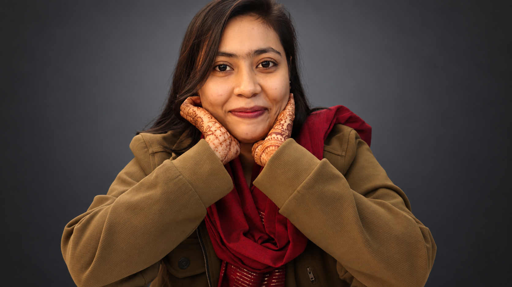

2020–2025
B.Sc. in Civil Engineering
Major: Environmental Engineering | Minor: Structural Engineering
Bangladesh University of Engineering and Technology (BUET)
Selected Relevant Coursework

Lecturer, Department of Civil Engineering,
Daffodil International University
Wastewater Treatment • Water Reuse • Constructed Wetlands • Microplastics & Risk Assessment • Environmental LCA & GIS
I am a Lecturer in the Department of Civil Engineering at Daffodil International University. I completed my B.Sc. in Civil Engineering from Bangladesh University of Engineering and Technology (BUET), majoring in Environmental Engineering with a minor in Structural Engineering.
My research interests center on sustainable water and wastewater management, especially wastewater treatment, tertiary treatment for effluent reuse, constructed wetlands, microplastics, environmental risk assessment, life cycle assessment, and geospatial analysis. I am particularly interested in doctoral research that connects treatment performance with environmental impacts, water reuse, resource recovery, and long-term sustainability.
2020–2025
Major: Environmental Engineering | Minor: Structural Engineering
Bangladesh University of Engineering and Technology (BUET)
Selected Relevant Coursework
My primary interests are in environmental engineering problems related to wastewater treatment and safe water reuse. I am especially interested in how conventional and nature-based treatment systems can be evaluated and improved for removal performance, energy demand, environmental burden, and long-term sustainability.
I am also interested in constructed wetlands, microplastics removal and associated environmental risks, artificial groundwater recharge, and GIS-based environmental assessment. My longer-term goal is to pursue Ph.D. research on sustainable treatment and reuse systems that combine process evaluation with life cycle and risk-based perspectives.
Life Cycle Assessment of Dasherkandi Sewage Treatment Plant with Tertiary Treatment Technologies for Effluent Reuse
Supervisor:
Dr. Sheikh Mokhlesur Rahman
Professor, Department of Civil Engineering, BUET
The study performed a seasonal life cycle assessment of the Dasherkandi Sewage Treatment Plant and evaluated combinations of tertiary treatment technologies for treated-effluent reuse. It examined seasonal variation, treatment performance, environmental impacts, and reuse potential with the aim of supporting improved wastewater management, water-scarcity mitigation, and sustainable development.
Conference Research
Conducted a data-driven comparative review of studies published from 2015 to 2025 on microplastics removal in wastewater treatment plants, constructed wetlands, and hybrid systems. The work compared reported removal efficiencies, removal mechanisms, and sustainability trade-offs, with particular attention to the potential of hybrid WWTP–constructed wetland systems.
8th International Conference on Civil Engineering for Sustainable Development (ICCESD 2026)
GIS & Environmental Monitoring
Conducted a spatial–temporal analysis of particulate matter (PM) concentrations in Tejgaon, Dhaka, using QGIS with Inverse Distance Weighting (IDW) interpolation and nonlinear regression techniques. Processed and analyzed multi-station air quality data to map pollution hotspots, visualize seasonal distribution patterns, and quantify temporal trends across the study area. The project highlights spatial variability in industrial-zone air pollution and provides data-driven recommendations for expanding and optimizing air quality monitoring networks in high-risk urban areas.
Air Pollution
viewed the environmental and health impacts of brick kiln emissions in Dhaka and examined cleaner kiln technologies.
Civil Engineering Capstone
Assisted in a comprehensive final-year civil engineering design project involving site surveys, feasibility studies, environmental impact assessment (EIA), and financial analysis. Contributed to the preparation of the project master plan and preliminary structural layouts, followed by detailed structural analysis using ETABS 2020. Designed structural members in accordance with BNBC 2020 provisions and prepared a Bill of Quantities (BOQ) for project cost estimation and planning.
Engineering Analysis
Completed academic projects including the design and analysis of a 15-storey residential building (ETABS 2020), a steel warehouse (SAP2000, BNBC 2020), a six-storey residential tender competition, a MATLAB-based SFD/BMD calculator, a poster presentation on slope failure in Bangladesh.
Since August 2025, I have been serving as a Lecturer in the Department of Civil Engineering at Daffodil International University, teaching courses and laboratory/session-based classes across environmental, water, geotechnical, mechanics, and basic engineering areas.
ArcGIS, OpenLCA
AutoCAD, ETABS, SAP2000
C, C++, MATLAB, Python, LaTeX, Microsoft Word, Excel, PowerPoint
Bengali (Native), English (Fluent)
2022
Bangladesh University of Engineering and Technology (BUET)
2021
Bangladesh University of Engineering and Technology (BUET)
SSC & HSC
Received Talentpool Scholarships in both secondary and higher-secondary examinations.
2023
2nd Runner-Up in the annual Civil Engineering festival, Ceismic.
## Beyond Academics Outside academics, I have always found happiness in exploring, creating, and sometimes simply getting my hands dirty, quite literally. Travelling, for me, is not only about reaching a famous destination. I am often more interested in the little experiences surrounding it. One of my favorite memories comes from a trip to Cox's Bazar. Of course, the sea was beautiful, but surprisingly, some of the moments I remember most clearly happened far away from the beach. We went to Chaufaldandi, where I had the opportunity to observe the lifestyle and traditions of the local Rakhine community. We saw how traditional *Nappi*, or *chepa shutki*, was prepared and learned about the local process of producing sea salt. Later, we tried Rakhine cuisine at Falong Zee, which made the experience feel even more complete. What stayed with me most was how different the place felt from the usual image of Cox's Bazar. There were salt fields, windmills, villages, and a completely different rhythm of life. I still remember standing on the bridge with the fresh air coming across the open landscape and thinking that I could probably remain there for hours. Moments like that are why I love travelling. The famous attraction may take me somewhere, but it is usually the unexpected corners, people, food, and traditions that make me remember the journey. My relationship with plants became much more serious during the COVID-19 period, when we properly started our own **rooftop garden**, or *chad krishi*. What began as a way of spending time at home gradually turned into something I became genuinely attached to. Over the years, we have grown tomatoes, potatoes, lettuce, sweet corn, dragon fruit, pineapple, and many other fruits and vegetables. My balcony has its own collection of flowering and ornamental plants as well, so greenery has slowly found its way into almost every available corner. Some gardening memories sound slightly ridiculous until you have cared for a plant yourself. One night, at around **2 a.m.**, I went up to the rooftop specifically to hand-pollinate our dragon fruit flowers. I remember being unusually excited just seeing them fully open. They were enormous, delicate, and beautiful, almost too dramatic for a plant sitting quietly on a rooftop. Dragon fruit flowers are nocturnal and can be hand-pollinated during the night, so apparently 2 a.m. gardening is not as unreasonable as it sounds. Seeing the fruit develop afterwards makes moments like that completely worthwhile. Gardening also happens to work very well with another thing I love: **cooking**. I enjoy preparing both local dishes and food inspired by cuisines from other countries. Recently, I experimented with Thai-style soup and fried rice with shrimp, meat, and vegetables. On other days, I am much closer to home, making biryani, polao, different meat dishes, or something much simpler. My favorite version of cooking, though, begins on the rooftop rather than in the kitchen. There is something incredibly satisfying about picking cucumbers, tomatoes, lettuce, or coriander that we have grown ourselves and using them immediately in a salad. It is a very small thing, but preparing a plate and realizing that part of it came from plants I had watered and watched grow makes the meal feel different. My interest in drawing has a family story behind it. It actually began with my brother, who was far more enthusiastic about art than I was at first. My father would buy him different colors, palettes, and painting materials, and naturally I became curious watching him use them. Somewhere along the way, his hobby became mine too. I especially love working with acrylic colors on canvas. Flowers, village scenery, nature, and little aesthetic scenes are the subjects I naturally find myself drawn to. Some of those paintings eventually became gifts for my friends. Seeing someone genuinely happy to receive something that I had painted myself gave the whole process a different meaning. I think that is still one of my favorite things about creating something by hand: it does not have to be perfect to become personal. When I want a quieter escape, I usually turn to **fiction**. Humayun Ahmed is one of the writers I particularly enjoy, and *Misir Ali Samagra* remains one of my favorites. I love the strange balance in the Misir Ali stories: something seemingly supernatural appears, while Misir Ali stubbornly searches for the logic hidden underneath it. That combination of mystery, psychology, and rational thinking is probably exactly why the stories stayed with me. Movies and series occupy the same corner of my life. I usually prefer **adventure, mystery, science fiction, and thrillers** over action-heavy stories. Give me an unexplained event, a scientific idea, a strange world, or a mystery to figure out and I am interested. *Stranger Things* is one of those series that completely worked for me. The mixture of science fiction, secret experiments, supernatural mystery, friendship, and suspense made it very difficult to stop watching once I started. So, outside academics, there is usually something else keeping me occupied: a place I want to explore, a plant waiting on the rooftop, a recipe I want to experiment with, an unfinished canvas, a Humayun Ahmed book, or a mystery waiting on the screen. I suppose I simply enjoy discovering things, whether that means discovering a new place or waiting until two in the morning for a dragon fruit flower to bloom.